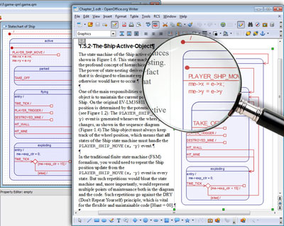
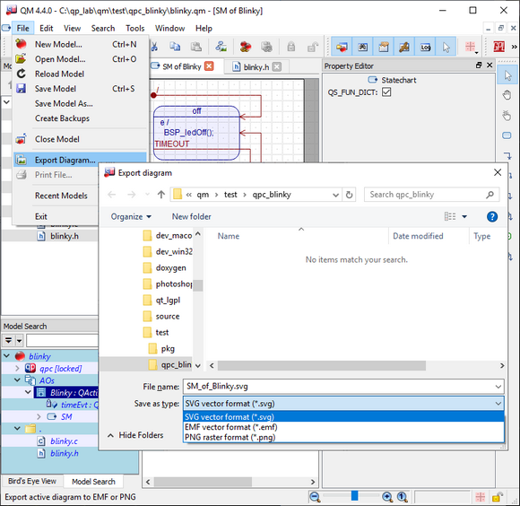

Model-Based Design Tool


In order to work with a diagram, you must first create it. For example, to create a State Machine diagram (Statechart), please refer to Section Adding a Statechart.
Once a diagram exists, you have two options of opening it. First option is to double-click on the diagram item in the Model Explorer to trigger its default action, which is to show the diagram.
Alternatively, you can right-click on the diagram in the Model Explorer to launch the popup menu associated with the diagram, and then choosing the first action from this menu, which is Show Diagram.
To close a diagram, you click on the button in the top-right corner of the diagram window, or in the MDI tab (if you use the Tabs View mode), as shown in the picture below.
Alternatively, the current active MDI window can be closed by means of the keyboard shortcut: Ctrl-.
Every diagram in QM™ is drawn on the canvas, which is a rectangular background area behind the various shapes. Even though you can actually draw outside the canvas, QM™ will export to a graphic format (see Exporting Diagrams) only the part of the diagram enclosed by the canvas.
As shown in the screen shot below, you can easily resize the Drawing Canvas by dragging its right or bottom edges, or by dragging the resize handle in the bottom-right corner of the canvas. In each case the mouse cursor indicates the possible direction of resizing.

All elements of any QM™ diagram are aligned with the grid. You can position the diagram nodes and route the connectors only along the grid nodes, and in fact, the geometry of any shape is stored in the grid coordinates, so you cannot achieve any finer positioning granularity than the grid size, which is currently 8 pixels horizontally and 8 pixels vertically.
However, even though you cannot remove the alignment of all shapes to the grid, you can show or hide the grid dots in the diagram. You show or hide the grid by means of the "Grid Options" selection in the View Menu, or by means of the grid drop-box (grid) in the View Toolbar.
Typically, when you simply click on a shape in a diagram you select that shape and clear any previous selection, so that only one shape is selected at a time. The model item corresponding to the selected shape becomes Current Item.
However, QM™ also offers you the convenience of selecting and manipulating multiple shapes simultaneously. QM™ provides two options of selecting multiple diagram shapes: the lasso tool and mouse selection-toggle. These two methods can be combined to fine-tune the selection.
To select shapes with the lasso, press the key on your keyboard, at which point the mouse cursor changes to a hand-pointer.
When you press the left mouse button, the cursor changes to a hand-pointer with a lasso and you can start dragging the lasso from that point.
You can also select or deselect shapes with the mouse-toggle. You start exactly the same as for selecting with the lasso, that is by pressing the key on your keyboard, at which point the mouse cursor changes to a hand-pointer.
Now you just hover the mouse over any shape (hover means just moving the mouse cursor without depressing any mouse buttons). Whenever you hover over an active part of a shape, the mouse cursor changes to a hand-pointer with "+". You can then click the left mouse button to select the shape, if it is not selected, or un-select it, if it was already selected.
 To pan the diagram with the mouse, press the key. At this point the mouse cursor changes to the open hand:
To pan the diagram with the mouse, press the key. At this point the mouse cursor changes to the open hand:
When you press the left mouse button, you "grab" the diagram and the cursor changes to closed hand:
Hold down the left mouse button and drag the whole diagram under the viewing window.
When the diagram window is smaller than the diagram canvas, QM™ displays scroll bars, which allow you to scroll the diagram horizontally and vertically.
You can scroll the diagram using the keyboard. As expected, the "up" key (key-up) scrolls the diagram up, the "down" key (key-down) scrolls the diagram down, the "left" key (key-left) scrolls the diagram left, and the "right" key (key-right) scrolls the diagram right.
You can also scroll the diagram using the mouse wheel. As expected, rotating the wheel forward scrolls the diagram down and rotating the wheel backward scrolls the diagram up. By pressing the key, you can also scroll the diagram horizontally. When the is pressed, rotating the wheel forward scrolls the diagram right and rotating the wheel backward scrolls the diagram left.
You can zoom a diagram in and out using several methods.
You can zoom a diagram by clicking on the zoom buttons (zoom-in, zoom-out, and zoom to 100%) in the Status Bar. The zoom-1 button (zoom to 100%)restores the zoom of 100%.

Alternatively, you can use the zoom slider in the Status Bar. Shifting the slider left towards zoom-out zooms out, towards zoom-in zooms in the diagram.
You can zoom the active diagram with the View Menu actions zoom-in, zoom-out, and zoom to 100%.
You can zoom a diagram in and out with the keyboard shortcuts, which are the same as those used in web browsers for zooming websites. The shortcut (Ctrl-minus) zooms out, (Ctrl-plus) zooms in, and (Ctrl-zero) zooms the diagram to 100%.
Finally, you can zoom the active diagram with the mouse wheel, in similar way as you zoom in or out on Google maps. To activate zoom by the mouse wheel, press the key on your keyboard. Now, rotating the mouse wheel forward zooms out and rotating the wheel backward zooms the diagram in, which is the same convention used in mapping applications, such as Google maps.
QM™ provides a very useful feature of exporting the active diagram to a graphic format, such as Scalable Vector Graphics and Portable Network Graphics (PNG) raster format. The SVG format is particularly interesting, because this vector format is supported by most web browsers and Microsoft Office/Open Office.

You can export the selected items or the whole active diagram to a graphic file by means of the menu. This menu opens up the File Save dialog box to choose the graphic file name and format (currently SVG or PNG) to save.

You can also copy the selected items or the whole diagram to the Clipboard in SVG by means of the (export to SVG) button in the Edit Toolbar. Once the SVG image is stored in the Clipboard, you can conveniently paste it directly to Microsoft Office, Open Office, or any other application that accepts SVG.